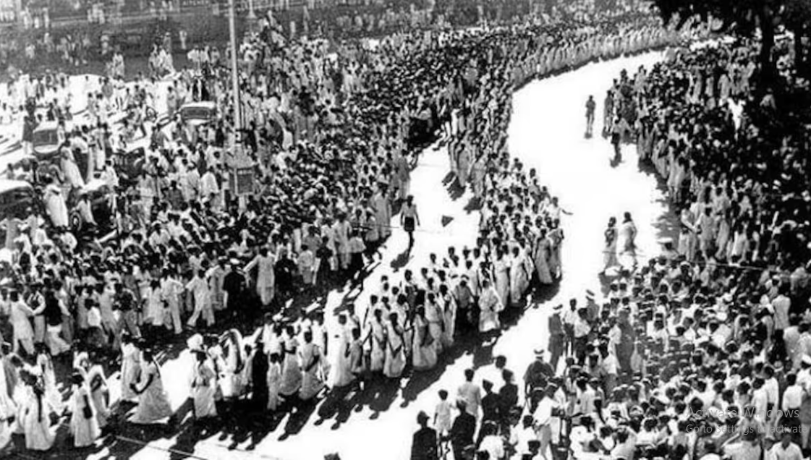

Quit India Movement was a massiveanti-colonial struggle in India, launched on August 8, 1942, under the leadership ofMahatma Gandhi, who gave the mantra of "Do or Die" during this Movement.
Projected initially as the civil disobedience movement, this 'third great wave' of India's struggle for freedom soon took a violent turn with the aim of 'fight to the finish' of the colonial empire.
Significance of Quit India Movement

Quit India Movement was a massive anti-colonial struggle in India, launched on August 8, 1942, under the leadership of Mahatma Gandhi, who gave the mantra of "Do or Die" during this Movement.
Projected initially as the civil disobedience movement, this 'third great wave' of India's struggle
for freedom soon took a violent turn with the aim of 'fight to the finish' of the colonial empire.
Quit India Movement Causes
The attitude of the British Government:
The Indian people had grown increasingly disillusioned with the British government's failure to fulfil its promises regarding India's self-rule.
Growing Nationalism:
The Indian people had grown increasingly disillusioned with the British government's failure to fulfil its promises regarding India's self-rule.
Socio-Economic factors:
India's participation in World War II placed significant economic burdens and restrictions on the country.
Thus, this participation led to rising prices, shortages of essential goods, and increased taxation, causing immense hardships for the Indian population.
Quit India Movement Limitations
The movement did not immediately lead to freedom, and it took more years of struggle and negotiations before independence was achieved.
The lack of central leadership hindered effective coordination and decision-making, leading to confusion and fragmentation within the movement.
Some political parties opposed the Quit India Movement such as Muslim League, Communist Party of India were against the Movement.